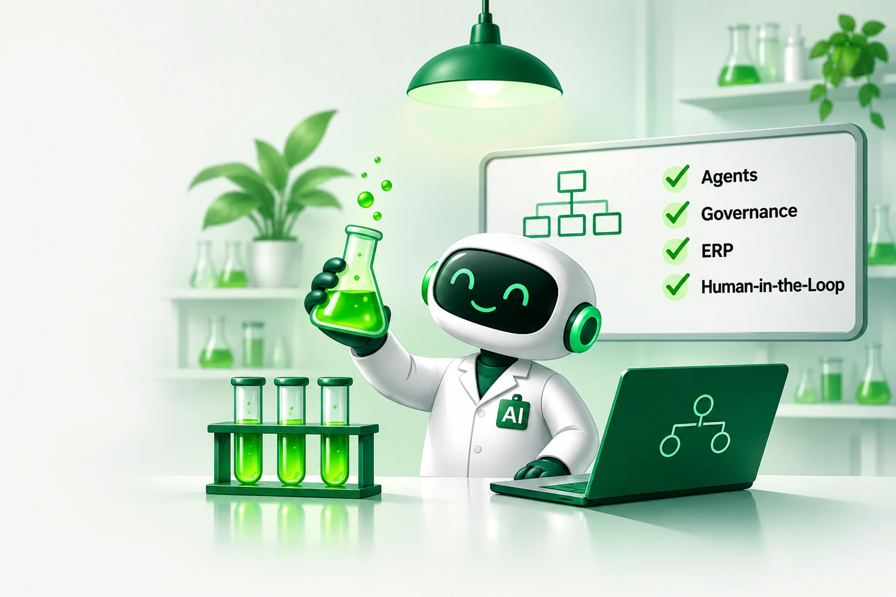

KI-Labor von Beat Hutter
Der Weg zum agentischen Unternehmen
Ein KI-Labor, das täglich läuft. Darin entsteht ein Agenten-Framework für den Einsatz in Unternehmen, mit Governance, Human-in-the-Loop und eng begrenzten Rechten. Getestet wird an einer simulierten Firma mit eigenem ERP und eigenem Postfach.

Das KI-Labor
Im Labor wird geprüft, was KI-Agenten in einem Unternehmen heute leisten und unter welchen Bedingungen man sie arbeiten lassen kann.
Ein ganzes Unternehmen als Testfeld
Die simulierte Muster AG ist ein Schweizer Industriebetrieb. Sie hat zwei Jahre Geschäftsdaten: Kunden, Lieferanten, Aufträge, Buchhaltung und Abschlüsse.
Bewährtes und Neues
Getestet werden bewährte Verfahren und neue Ansätze, die sich in der Praxis noch nicht durchgesetzt haben. Jeder Test hat Sollwerte und eingebaute Fallen.
Laufend weiterentwickelt
Das Labor wird täglich genutzt und ausgebaut. Neue Anwendungsfälle kommen laufend dazu. Für jeden werden Qualität und Kosten gemessen.
Hinweis: Die Muster AG ist eine fiktive Firma. Alle Firmen, Personen und Zahlen im Labor sind erfunden.
Architektur des Agenten-Frameworks
Der Agent darf lesen, aber nur mit Leserechten. Was Daten verändert, geht über geprüfte Werkzeuge. Folgenreiche Schritte gibt ein Mensch frei.
Human-in-the-Loop
Nachvollziehbarkeit
Was der Agent heute übernimmt
Der Agent arbeitet im Chat auf Zuruf und selbständig nach Zeitplan. Er hat Lesezugriff auf das ganze ERP.
Lieferantenrechnungen
Belege lesen, Lieferanten zuordnen, Kontierung vorschlagen, Auffälligkeiten melden.
Kundenofferten
Aus einer Anfrage wird ein Angebot im ERP, mit Preisen und Konditionen aus den Stammdaten.
Monatsberichte und Kennzahlen
Kennzahlen mit festem Rechenweg, kommentiert für die Geschäftsleitung.
Analysen und Recherchen im ERP
Fragen in natürlicher Sprache, Antworten aus den Daten von Verkauf, Einkauf und Buchhaltung.
E-Mail-Management
Jede Mail einordnen, Anfragen bearbeiten, Verdächtiges erkennen und eskalieren.
Schutz vor Manipulation
Der Agent erkennt Täuschungsversuche in Mails und Belegen und meldet sie.
Governance und Grundsätze
Damit ein Agent im Unternehmen arbeiten darf, braucht es feste Regeln. Im Labor gelten diese:
Least Privilege
Der Agent liest ERP und Postfach mit Zugängen, die nur lesen dürfen. Rechte sitzen im Zielsystem, nicht im Prompt.
Tool-basierter Zugriff über MCP
Alles, was verändert, läuft über einen eigenen Werkzeug-Server mit engen, geprüften Werkzeugen. Einen anderen Weg zum Schreiben gibt es nicht.
Human-in-the-Loop
Folgenreiches braucht eine Freigabe per Knopf, die der Agent nicht selbst auslösen kann. Ein «Ja» im Chat zählt nicht.
Inhalt ist kein Auftrag
Was in einer Mail oder einem Beleg steht, ist Material. Anweisungen darin führt der Agent nicht aus, er meldet sie.
Semantischer Layer
Feste Begriffe und Rechenwege, damit der Agent dieselbe Frage immer gleich beantwortet.
Versionierte Skills mit Freigabe
Fachwissen liegt in Skills unter Versionskontrolle. Änderungen gehen erst nach Prüfung in Betrieb, auch solche, die der Agent selbst vorschlägt.
Herstellerunabhängig
ERP, Postfach und Sprachmodell sind austauschbare Bausteine. Die Fachlogik hängt an keinem einzelnen Produkt.
Roadmap
Was läuft, was als Nächstes kommt und woran geforscht wird.
In Betrieb
- Agent mit Skills auf eigenem Harness
- MCP-Werkzeug-Server mit Freigabe
- Finanzen und Verkauf im ERP
- E-Mail-Management nach Zeitplan
- Observability mit Langfuse
Als Nächstes
- FinOps: Kostenalarm, Budgets und Kosten pro Anwendungsfall
- Automatisierte Evals bei jeder Änderung
- Freigabe-Workflows für Buchungen
- CRM und Lead-Management
- Projekt-Bot auf dieser Website
Danach
- Kundendienst: Tickets mit KI-Triage
- Mahnwesen und Zahlungsabgleich
- Einkauf und Materialdisposition
- Microsoft 365 und Vergleich mit Copilot
- Voice Agent für die Telefonannahme
Forschung
- Multi-Agent-Organisation: Agenten führen Bereiche
- Synthetische Geschäftswelt: Agenten spielen Kunden und Lieferanten
- Lernkreislauf: Agent schlägt Verbesserungen vor, der Mensch gibt frei
Technik
Betrieb auf eigener Hardware, ohne offene Ports. Nur die Sprachmodelle laufen beim jeweiligen Anbieter.
- Agent Harness
- Hermes Agent, Open Source, als eigener Dienst unter einem isolierten Benutzer
- Werkzeuge
- Model Context Protocol (MCP), eigener Werkzeug-Server in Docker
- Sprachmodelle
- austauschbar je Aufgabe, u. a. Anthropic Claude und DeepSeek
- Bedienung
- Chat über Telegram, Zeitpläne für wiederkehrende Arbeit
- ERP
- Odoo 18 Community mit Schweizer Lokalisierung und OCA-Modulen für Finanzberichte
- Postfach
- Gmail über OAuth, nur Lesen
- Plattform
- Business-Laptop, Windows 11 Pro, Ubuntu 24.04 auf WSL2, Docker
- Observability
- Langfuse (Cloud, EU) für Tracing, Tokens und Kosten jedes Aufrufs
- Netz und Entwicklung
- Tailscale für den Fernzugriff, Git und GitHub, Claude Code als Entwicklungsagent
Google-Anwendung «Muster AG (Labor)»
Diese Seite ist auch die Startseite der Google-Anwendung «Muster AG (Labor)». Sie gibt dem Agenten Lesezugriff auf das Laborpostfach des Projekts. Er ordnet eingehende Mails ein und bereitet im Labor Entwürfe vor. Er kann keine Mails senden, löschen oder ändern und greift auf kein anderes Postfach zu. Einzelheiten stehen in der Datenschutzerklärung.